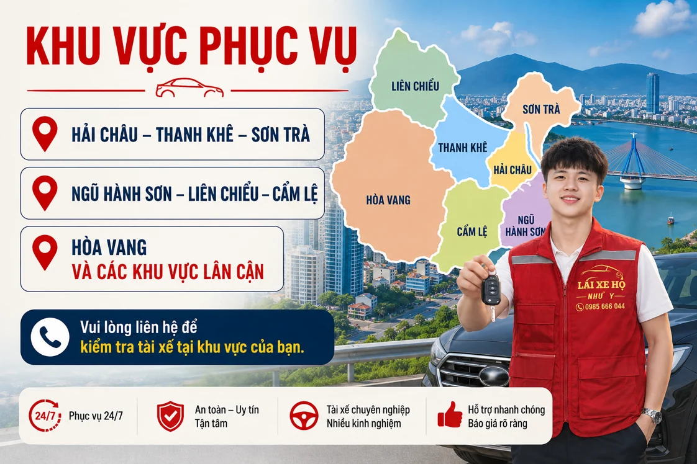
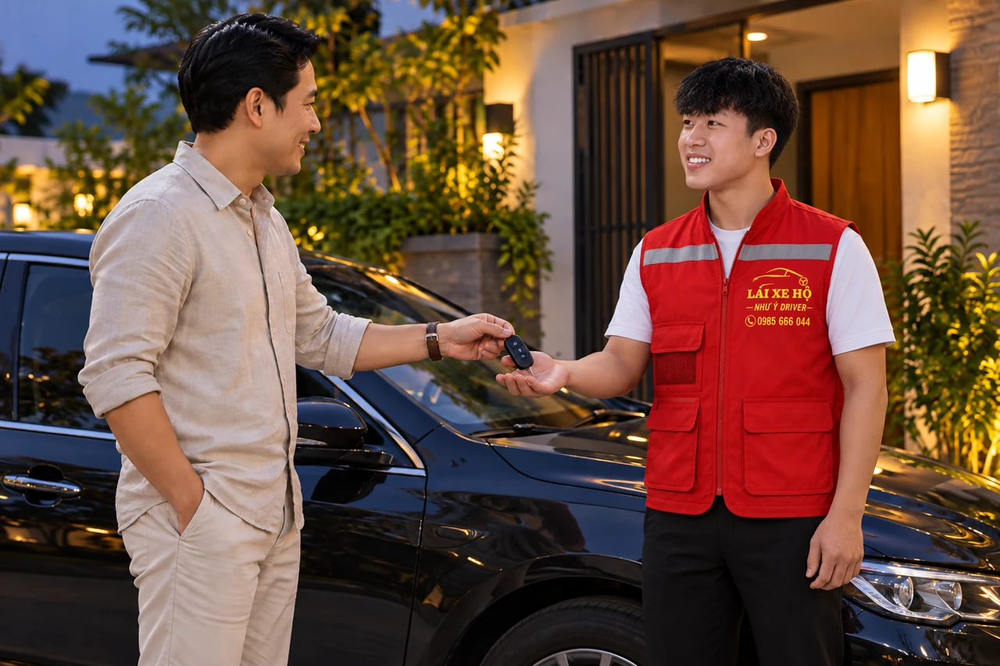

NHƯ Ý DRIVER · ĐỒNG HÀNH CÙNG BẠN
Khu vực phục vụ lái xe hộ tại Đà Nẵng
Như Ý Driver tiếp nhận yêu cầu lái hộ tại các khu vực Đà Nẵng được liệt kê bên dưới. Chọn nơi xe đang đỗ để xem hướng dẫn riêng; sau đó gửi địa chỉ đón, điểm trả và giờ đi để kiểm tra lịch tài xế và chi phí.

Chọn khu vực nhận xe
Mỗi khu vực có hướng dẫn riêng về vị trí nhận xe và thông tin cần gửi. Hãy gửi địa chỉ hoặc ghim để xác nhận khả năng bố trí tại thời điểm bạn cần.


Cẩm Lệ – Hòa Xuân
Đón ở nhà và nhận xe ngoài điểm hẹn là hai kế hoạch khác nhau
Xem hướng dẫn khu vực →

Nhận yêu cầu lái hộ tại Đà Nẵng
- Hải Châu, Sơn Trà và Ngũ Hành Sơn.
- Thanh Khê, Cẩm Lệ và Liên Chiểu.
- Hoà Xuân.
Kiểm tra bằng địa chỉ thực tế
Dù đón tại nhà hàng, khách sạn, nhà riêng hay bãi đỗ xe, bạn nên gửi địa chỉ kèm một điểm mốc dễ nhận biết. Nếu xe ở hầm hoặc có nhiều cổng vào, hãy cho biết lối đến xe để tài xế tìm đúng chỗ.
Với điểm đón ở Hoà Vang hoặc khu vực lân cận, vui lòng liên hệ để kiểm tra lịch tài xế. Nếu cần di chuyển xa hơn, xem hướng dẫn gửi yêu cầu đi tỉnh.
Quy trình đặt và sử dụng dịch vụ
- Gửi yêu cầu: cung cấp vị trí đón, điểm đến, loại xe và thời gian cần đi qua điện thoại, Zalo hoặc biểu mẫu trên trang chủ.
- Xác nhận: trao đổi lộ trình, khả năng bố trí tài xế, chi phí, thời gian đón và các yêu cầu riêng.
- Bàn giao: kiểm tra người nhận xe, tình trạng xe và các thao tác cần lưu ý trước khi khởi hành.
- Kết thúc: kiểm tra xe, chìa khóa và đồ dùng; thanh toán theo nội dung đã thống nhất.
Đặt ở một khu vực, trả xe ở khu vực khác
Khu vực có xe và khu vực bạn muốn đến có thể khác nhau. Khi liên hệ, gửi cả hai đầu hành trình; nếu đang chờ ở nơi khác với chỗ đỗ xe, ghi thêm nơi gặp để bàn giao chìa khóa.
| Vị trí cần làm rõ | Thông tin hữu ích |
|---|---|
| Xe đang đỗ | Ghim, địa chỉ, cổng vào, tầng hầm hoặc tên bãi. |
| Người giao chìa khóa | Tên và số liên lạc nếu khác người đặt. |
| Điểm trả cuối | Địa chỉ, lối vào và người nhận nếu khách không đi cùng. |
| Điểm ngoài danh sách | Gửi yêu cầu để kiểm tra, không mặc định sẵn tài xế. |
Bạn có thể xem bảng giá theo loại xe trước khi gửi lịch. Với chuyến xa hoặc cần chờ, cần báo đủ hành trình để nhận giá phù hợp.
Câu hỏi thường gặp
Tôi có thể đặt ngay không?
Bạn có thể gọi hoặc nhắn ngay. Chuyến đi chỉ được xác nhận sau khi kiểm tra khả năng bố trí tài xế và thống nhất thời gian đón.
Chi phí được tính thế nào?
Xem bảng giá tham khảo và gửi lịch trình cụ thể. Giá thực tế, thời gian chờ và các khoản phát sinh nếu có được thống nhất trước chuyến.
Hình ảnh đồng phục Như Ý Driver
Đồng phục có gile đỏ phản quang, áo polo đen và áo khoác đen viền đỏ theo các mẫu Như Ý cung cấp. Khi gặp, vẫn cần đối chiếu thông tin tài xế với điều phối trước khi giao chìa khóa.
Thông tin liên quan
HÃY CHỦ ĐỘNG CHO CHUYẾN ĐI
Cần người lái xe thay bạn?
Gửi điểm đón, điểm đến, loại xe và giờ đi. Như Ý Driver sẽ kiểm tra lịch, thống nhất chi phí và thời gian đón trước khi xác nhận chuyến.